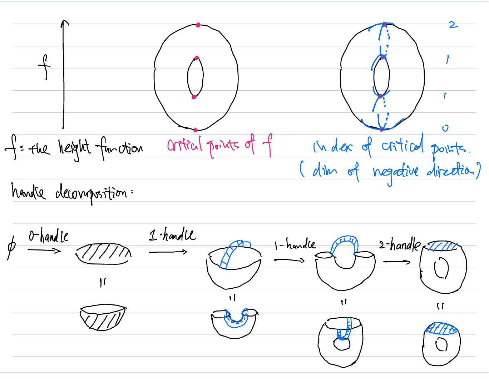
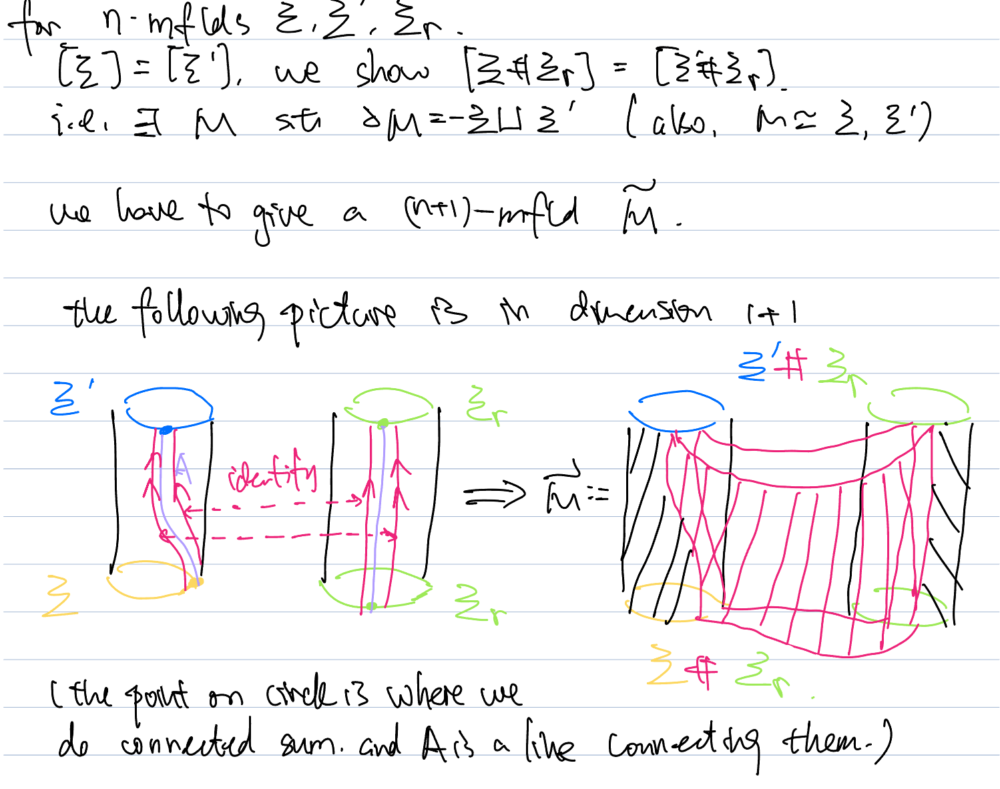
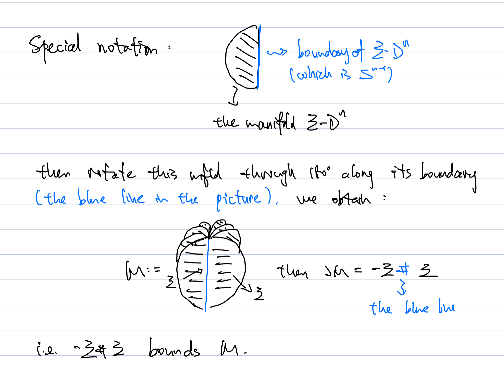
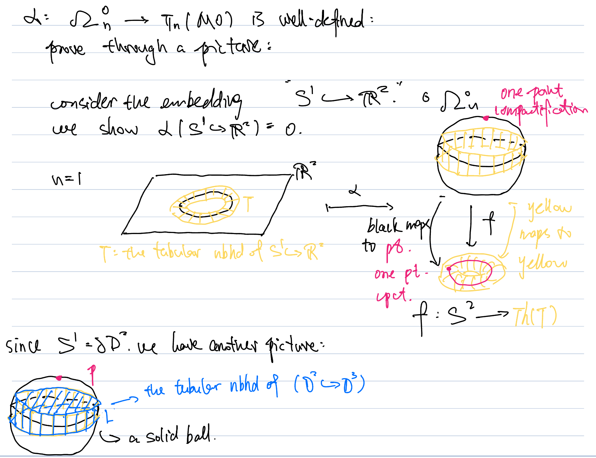
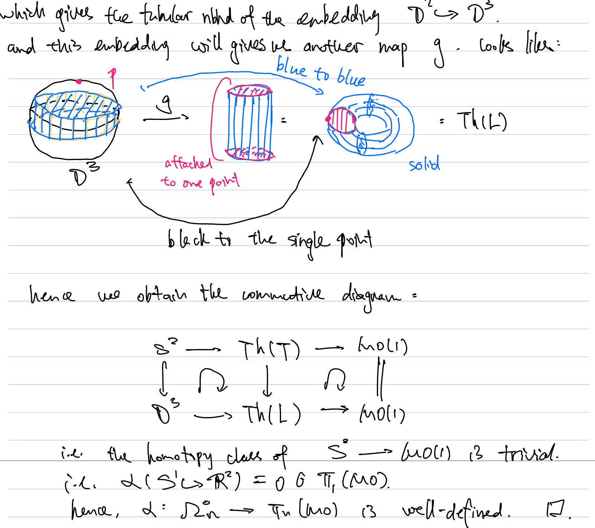

庞加莱猜想与怪球
Poincare Conjecture
Topological Poincare Conjecture
我们把拓扑庞加莱猜想简记为 (GPC) General Poincare Conjecture.
- GPC:
- 任意闭的拓扑流形 M^n, 若 M^n 是同伦球面(M 同伦等价于 S^n), 则 M 是拓扑球面(同胚于 S^n).
- GPC 是对的.
- 相比确定同胚型, 确定同伦型是相对容易的.
- 主要工具是Whitehead 定理:
- 假设 X,Y 是两个 CW 复形, 若存在连续映射 f: X\to Y, f 诱导同伦群上的同构 (称这样的 f 为弱同伦等价), 则 f 是同伦等价.
- 同调版本: 对于单连通的空间 X,Y, 若 f: X\to Y 诱导同调群上的同构, 则 f 是同伦等价.
- Sketch: 使用 Hurewicz 定理.
- 证明拓扑空间 X 是同伦球面的过程是标准的:
- 若 X 单连通, 且为同调球面, 则 X 是同伦球面.
- Sketch: 使用 Hurewicz 定理构造映射 f + 同调版本的 Whitehead 定理.
- 推论: 单连通的三维流形是同伦球面.
- 若 X 单连通, 且为同调球面, 则 X 是同伦球面.
- 猜想: 同调庞加莱猜想
- 同调球面是拓扑球面。
- 猜想是错的, 反例: Poincare 构造了 3 维怪球(它是同调球面, 但不是同伦球), 它的基本群不平凡 (基本群是 \tilde{I} , 用 \mathbb{Z}_2 对 A_5 进行中心扩张后得到的完美群, 完美群: 商掉交换子是零)
- 主要工具是Whitehead 定理:
- weak GPC: 任意闭的光滑流形 M^n, 若 M^n 是同伦球面, 则 M^n 是拓扑球面.
- Smale: weak GPC 在 n\geq5 的情形下成立.
- 这个结果弱于GPC, 因为它要求流形是光滑的. 然而我们关心的多数流形都是光滑的, 故这个结果也足够重要.
- weak GPC 的证明主要依赖于 h-cobordism 定理.
- handle 分解
- handle 分解是胞腔分解在光滑流形中的对应: 注意到, 一般来说, 粘接不同的胞腔会改变拓扑空间的维数, 导致得到的胞腔复形一般来说不是流形.
- handle 分解的定义:
- main idea: 对于一个 n 维的闭光滑流形 M^n, 我们希望将 M 表示成若干个 (有限多个) D^n 的组合(这里每个 D^n 被称为 handle h, 可以定义它的指标, 指标为 k 的 handle 被记为 k-handle, 对应于胞腔分解中的一个 k-cell).
- 每个组成部分 D^n 都是平凡的, 我们流形 M 的复杂程度完全蕴含在了每个 D^n 的粘接方法中.
- 在考虑粘接 handle 时, 我们应该想象这个操作在胞腔分解中的对应. 事实上, handle 分解在同伦上给出了一个胞腔分解.
- 在某个光滑流形 X^n 上粘接 k-handle:
- 为了对应粘接 k-cell，我们将 D^n (把这个 handle 记为 h) 看作 D^k\times D^{n-k}，其中第一个分量 D^k 用于粘接：我们将 D^k 的边界 S^{k-1} 粘接到初始流形 X 的边界 \partial X 上；而 D^{n-k} 则用于“补充”，保证粘接得到的结果还是一个流形。
- 具体来说: 给定一个嵌入映射 \varphi: \partial D^k\times D^{n-k}=S^{k-1} \times D^{n-k} \hookrightarrow \partial X，粘接后的流形定义为 X \cup_{\varphi} h := X \sqcup (D^k \times D^{n-k}) / \sim，其中等价关系 \sim 由 \varphi 给出。
- 在同伦上看, 这个操作对应于粘接一个 k-cell.
- 定义: 光滑流形的 handle 分解
一个 n 维光滑流形 M 的一个 handle 分解是指从空集 \varnothing 出发，通过有限次粘接 handle 得到 M 的一个表示。更细致地说，一个 handle 分解是一个有限序列 \varnothing = M_{-1} \subset M_0 \subset M_1 \subset \cdots \subset M_m = M，其中每个 M_j 是通过在 M_{j-1} 上粘接一个 handle 得到的。
例子: T^2 的 handle 分解

T² 的 handle 分解
- handle 分解的对偶和消去:
- add picture
- main idea: 对于一个 n 维的闭光滑流形 M^n, 我们希望将 M 表示成若干个 (有限多个) D^n 的组合(这里每个 D^n 被称为 handle h, 可以定义它的指标, 指标为 k 的 handle 被记为 k-handle, 对应于胞腔分解中的一个 k-cell).
- Morse 函数和 handle 分解的存在性:
- 结果: 任意紧的(可能带边界)光滑流形上存在 (有限) handle 分解.
- 论证依赖 Morse 理论:
- Morse 函数: 给定一个光滑流形 M 上的光滑函数 f: M \to \mathbb{R}，若其所有临界点(导数为零的点)都非退化 (二阶导数矩阵, 即Hessian 矩阵 H_{ij}(p) = \frac{\partial^2 f}{\partial x_i \partial x_j}(p) 的行列式不为零) ，则称 f 为一个 Morse 函数. 我们可以根据 Hessian 矩阵的 signature(负惯性指数) 来定义临界点的指标。
- 光滑流形 M^n 上的任意 Morse 函数给出 M^n 上的一个 handle 分解. 且指标为 k 的临界点对应一个 k -handle 的粘接。
- 光滑流形 M^n 上总存在 Morse 函数 (事实上, Morse 函数在 C^\infty\left(M\right) 中是稠密的, C^\infty\left(M\right) 定义为 M 上所有光滑函数构成的空间)
- 结合以上，handle 分解总存在。
- 例子: T^2 的 handle 分解.
- h-cobordism 和 h-cobordism 定理 (Smale)
- oriented cobordism:
- 我们称两个 n 维定向流形 X_1,X_2 是定向配边的, 如果存在一个定向的 (n+1) 维流形 M, 使得在集合上看, 我们有 \partial M=X_1\sqcup X_2 (仅仅将这里的流形看成集合), 如果考虑流形的定向, 则我们有 \partial M = X_1 \sqcup (-X_2)，其中 -X_2 表示流形 X_2 带相反定向. 有时, 我们也把 \left(M;X_1,X_2\right) 称为一个定向配边.
- 如果我们将对 X_1,X_2,M 的定向要求去掉, 并且只要求 \partial M=X_1\sqcup X_2 在集合上成立, 则我们称 X_1 和 X_2 是配边的.
- 例子 (定向配边):
- 我们称两个 n 维定向流形 X_1,X_2 是定向配边的, 如果存在一个定向的 (n+1) 维流形 M, 使得在集合上看, 我们有 \partial M=X_1\sqcup X_2 (仅仅将这里的流形看成集合), 如果考虑流形的定向, 则我们有 \partial M = X_1 \sqcup (-X_2)，其中 -X_2 表示流形 X_2 带相反定向. 有时, 我们也把 \left(M;X_1,X_2\right) 称为一个定向配边.
- h-cobordism:
- 考虑定向配边 X_1,X_2,M, 以及嵌入映射 \iota_1: X_1\to M, \iota_2: X_2\to M. 我们称 (M;X_1,X_2) 是一个 h-配边，如果每个嵌入 \iota_i 都是同伦等价。
- 这里的 h 代表同伦。
- 考虑定向配边 X_1,X_2,M, 以及嵌入映射 \iota_1: X_1\to M, \iota_2: X_2\to M. 我们称 (M;X_1,X_2) 是一个 h-配边，如果每个嵌入 \iota_i 都是同伦等价。
- h-cobordism Theorem:
定理: 设 \left(M;X_1,X_2\right) 是一个紧的、单连通的 h-配边，且 \dim X_1 \geq 5，则 M 微分同胚于一个柱面 X_1 \times [0,1]。
- 拓扑 h-cobordism Thm: 保持假设不变, 推出 M 同胚于柱面 X_1\times [0,1]
推论: 若 \left(M;X_1,X_2\right) 如上所述, 则 X_1 与 X_2 微分同胚.
推论: 对于维数大于等于 5 的情形 \{ 拓扑球的集合 \}/ \text{Diffeo} \cong \{ 同伦球的集合 \}/\text{h-cobordism}
- 证明: 利用 GPC+ h-cobordism 定理.
定理的证明思路: 我们对 pair \left(M,X_1\right) 做 handle 分解 (即将 M 写成在 X_1\times[0,1] 上粘接 handles 的形式)。利用单连通和同伦等价的强限制, 我们可以证明这个 handle 分解实际上没有多余的 handles, 即 M\cong X_1\times[0,1].
- oriented cobordism:
- 历史: GPC 的证明
- weak GPC (n\geq5): Smale
- GPC \left(n\geq5\right): Newman by Connell
- key word: Engulfing method (吞噬法)
- GPC \left(n=4\right): Freedman
- 证明概要:
- Freedman: 拓扑 h-cobordism 定理在 \dim X_1=4 的情形下成立.
- Wall: 设 M,N 是单连通的闭四维流形, 若它们之间有等价的 intersection form (一个同伦不变量, 后面介绍), 则它们之间存在一个 h-配边。
- 推论: 对于单连通闭四维流形 M，M 的拓扑完全由它上面的 intersection form 决定, 从而同伦等价蕴含同胚。这蕴含了 GPC, n=4.
- 证明概要:
- GPC \left(n=3\right): Perelman 通过证明几何化猜想而完成。
- GPC \left(n<3\right): trivial.
还有很多数学家做出了重要的贡献, 即使我们没有一一列举.
Smooth Poincare Conjecture and Exotic Sphere
- SPC: 光滑庞加莱猜想
- SPC: 设 M^n 是光滑闭流形, 若它是同伦球面, 则它也是微分球面 (微分同胚于标准 S^n).
- 一般的 SPC 是错的:
- Milnor 在 1956 年发现了第一个怪球 S^7.
- 事实上, SPC 在多数维数上失效。
- 既然一般来说,(拓扑) S^n 上的光滑结构不止一种, 我们考虑其上所有光滑结构的集合, 记为 \theta\left(n\right).
- 对于 n\geq5, 我们知道如何计算 \theta\left(n\right)
- 至少, 我们将计算 \theta\left(n\right) 归结成了计算球面的稳定同伦群(难算).
- 对于 n\leq3: 流形上的光滑结构唯一, 故 GPC 推出 SPC.
- 对于 n=4: 我们完全不知道 \theta\left(4\right), SPC 4 是开放问题。
- 拥有唯一光滑结构的奇数维拓扑球面，只有 1 维、3 维、5 维以及 61 维。其余所有奇数维球面都必然存在怪异微分结构. (王国祯, 徐宙利, 2016)
下文中, 我们主要讨论 \theta\left(n\right),n\ge 5 的计算问题.
- 定义: Kervaire-Milnor group
- 对于 n\geq5 的情形下, 我们已经得到了双射: \{ 拓扑球的集合 \}/ \text{Diffeo} \cong \{ 同伦球的集合 \}/\text{h-cobordism}. 这其实是个群同构. 左边的群, 记为 \Theta_n, 被称为 Kervaire-Milnor 群.
于是, 我们只要关心 \Theta_n 的计算问题.
Computation of \Theta_n
\Theta_n as a Group
- 定向配边群:
- 回顾定向配边, 固定维数 n, 我们考虑所有定向 n 维流形的定向配边类构成的集合, 记为 \Omega_n.
- \Omega_n 作为群:
- 加法: [\Sigma_1]+[\Sigma_2]:=[\Sigma_1\sqcup\Sigma_2].
- 逆元: -[\Sigma]:=[-\Sigma]
- 零元素: [\emptyset]
- 注意 [\partial M]=[\emptyset]
- 容易验证, \Omega_n 构成 Abel 群.
- 例子: 在 n=2 维中, S^2\times[0,1]
- \Theta_n 作为群
- 群结构:
- 加法: [\Sigma_1]+[\Sigma_2]:=[\Sigma_1\# \Sigma_2]
- 逆元: -[\Sigma]:=[-\Sigma]
- 零元: [S^n], 标准光滑球面所在的等价类
- 显然, 加法是交换的. 故为 abel 群.
- 一些说明:
- 加法良定义:
lemma: 同伦球的连通和还是同伦球.
- 使用命题: 单连通的同调球是同伦球.
LEMMA 2.2. Let M, M' and M_r be closed and simply connected. If \Sigma is h -cobordant to \Sigma' then \Sigma \# \Sigma_r is h -cobordant to \Sigma' \# \Sigma_r.
Prove via a picture:

- 逆元满足 -[\Sigma]+[\Sigma]=[S^n] :
LEMMA 2.3. A simply connected manifold \Sigma is h -cobordant to the sphere S^n if and only if \Sigma bounds a contractible manifold.
Sketch:
- 假设 [\Sigma]=[S^n], 即 \Sigma \sqcup -S^n=\partial M. 我们沿着边界上的标准 S^n 粘回去一个 D^{n+1}, 得到 M', 且有 \Sigma = \partial M'。由于 S^n 是 M 的形变收缩核, 故粘接 disk 之后, 得到的流形 M' 是可缩的.
- 假设 \Sigma bounds 一个可缩的 M, 在在 M 的内部挖去一个 disk, 我们得到单连通的流形 M'.
- S^n 是 M' 的形变收缩核: 考虑 map of pair: \left(D^{n+1},S^n\right)\hookrightarrow (M,M'), 我们可以证明 S^n\hookrightarrow M' 保持同调群.
- \Sigma 是 M' 的形变收缩核: 对配边 \left(M';\Sigma,S^n\right) 使用 Poincare 对偶, 我们得到相对同调群同构 H_*\left(M',\Sigma\right)\cong H^{n+1-*}\left(M',S^n\right) (用 handle 分解的对偶性质) , 从而 H_*\left(M',\Sigma\right)\cong0 , 至此我们说明了 \Sigma\hookrightarrow M' 保持同调群, 故它是同伦等价.
LEMMA 2.4. If \Sigma is a homotopy sphere, then \Sigma \# (-\Sigma) bounds a contractible manifold.
Sketch: 为了做连通和, 在 \Sigma 上面挖掉一个 disk. 这样会得到带边流形 \Sigma-D^n. 我们沿着这个流形的边界旋转 180 度, 得到流形 M, 如下图所示:

这样构造的 M 显然同伦等价于 \Sigma-D^n (这个同伦可以被造出来), 又注意到, \Sigma 是同伦球面, 故 \Sigma-D^n 可缩, 于是 M 可缩. 根据 LEMMA 2.3, 我们有 [\Sigma]+[-\Sigma]=[S^n]=0.
- 加法良定义:
- 群结构:
- Relation between these two Groups
- \Omega^h_n 中的加法和单位元的定义在 \Omega_n 中仍然生效:
- [\Sigma\# \Sigma']=[\Sigma \sqcup\Sigma'] in \Omega_n: 考虑在 \left(\Sigma\sqcup\Sigma'\right)\times[0,1] 上面粘接 1-handle, 这个 \left(n+1\right) 维流形给出了我们想要的 cobordism.
- [S^n]=0 in \Omega_n: 它是 D^{n+1} 的边界.
- 但我们在 \Omega_n^h 中只能用连通和和 [S^n] 定义群结构:
- \Omega_n 中的运算在 \Omega^h_n 上不封闭.
- \Omega^h_n 中的加法和单位元的定义在 \Omega_n 中仍然生效:
Framed cobordism and Stable homotopy groups
Framed cobordism
- 稳定可平行化流形
- 可平行化: 称一个流形 M 是可平行化的, 如果它的切丛 TM 是一个平凡向量丛.
- 稳定可平行化: 称一个流形 M 是稳定可平凡化的, 如果它的切丛直和某个平凡向量丛后成为平凡丛。
- S^n 一般不是可平行化流形, 但是稳定可平凡化流形:
- 不可平行化: S^n 只有在维数 n=1,3,7 可平行化.
- 稳定可平行化: TS^n\oplus \epsilon^1 是平凡丛.
- 不可平行化: S^n 只有在维数 n=1,3,7 可平行化.
- Framed manifold
- 我们知道, 流形 M^n 可以被嵌入到维数充分大的欧氏空间 \mathbb{R}^{n+k} 中. 如果这个嵌入 i:M^n\hookrightarrow \mathbb{R}^{n+k} 的法丛是平凡丛, 我们可以在法丛上选定一个标架场(平凡化). 法丛上带有平凡化的流形被称为一个 framed manifold.
- 命题: 任意稳定可平行化流形 M, 存在充分大的 k, 以及嵌入 i:M^n \hookrightarrow\mathbb{R}^{n+k} 使得法丛是平凡的. 即对于这种流形, 我们总可以给它一个 frame, 使其成为 framed manifold.
- Sketch:
法丛关系： 因为 M^n 嵌在 \mathbb{R}^{n+k} 中，它的切丛和法丛的直和一定是整个平坦宇宙的切丛（即平凡丛）： TM \oplus \nu^k \cong \epsilon^{n+k}
稳定可平行化前提： 你假设了 M 是稳定可平凡化的。它的代数定义是：只要给切丛加上某个足够大维度 a 的平凡丛，它就会变成一个平凡丛： TM \oplus \epsilon^a \cong \epsilon^{n+a}
我们在第 1 个公式的两边，同时加上一个 \epsilon^a： (TM \oplus \epsilon^a) \oplus \nu^k \cong \epsilon^{n+k} \oplus \epsilon^a 把括号里的东西替换成第 2 个公式的结果： \epsilon^{n+a} \oplus \nu^k \cong \epsilon^{n+k+a} 这个公式的白话翻译是： 你的法丛 \nu^k，如果再给它强行加上一个极其庞大的平凡向量丛 \epsilon^{n+a}，它俩混在一起后，就彻底变成了一个完美的、没有打结的平凡丛！在拓扑学里，这就叫证明了 \nu^k 是 “稳定平凡的 (Stably trivial)”。
- Sketch:
- 并不是所有的流形上都可以定义 frame. 球面 S^n 上可以定义 frame. 同伦球面上也可以定义 frame.
- Framed cobordism:
- Framed cobordism 是两个 framed manifold 之间的等价关系，它考虑的是在更高一维的流形中，两个 framed manifold 是否可以通过一个 framed cobordism 连接起来。我们将这个配边群记为 \Omega^{\text{fr}}_n.
我们从定义中发现, framed manifold \left(M,f\right) 和嵌入的欧氏空间 \mathbb{R}^{n+k} 的维数 k 有关系. 即 framed manifold 是在稳定意义下的 (我们可以在所有的 framed manifold 构成的集合上定义等价关系: 由”稳定”给出, 然后考虑在这个等价关系下的等价类. ) 事实上, 这种稳定的现象还出现在了同伦群的计算中.
- 球面的稳定同伦群
- \pi_k\left(S^k\right)\cong\mathbb{Z},\forall k\geq1
- 换一种写法: \lim_{ k \to \infty }\pi_{0+k}\left(S^k\right)=\mathbb{Z}
- 这可以被推广 (by suspension theorem):
- \lim_{ k \to \infty }\pi_{n+k}\left(S^k\right) 收敛 (当 k 充分大时, 这个群不依赖于 k 的选取)
- 将这个群定义为球面的 n 阶稳定同伦群, 记为 \Pi_n。
- \pi_k\left(S^k\right)\cong\mathbb{Z},\forall k\geq1
- 定理 (Pontryagin-Thom):
- Framed cobordism 群 \Omega_n^{\text{fr}} 与球面 S^n 的稳定同伦群 \Pi_n 是同构的.
- 我们给出映射 \Omega_n^{\text{fr}}\to \Pi_n, 它是著名的 Pontryagin-Thom构造, 在不同的 cobordism 类有众多推广.
- Pontryagin-Thom 构造: 对于 i:M^n \hookrightarrow \mathbb{R}^{n+k} 和 framing f, 粗略地说, 我们将给出从环境流形 \mathbb{R}^{n+k} 到 M^n 的一个坍缩映射(事实上, 我们给出从环境流形 \mathbb{R}^{n+k} 的紧致化到 M^n 的管状邻域的紧致化的坍缩映射).
- M 的管状邻域的紧致化: 我们考虑 M^n 在 \mathbb{R}^{n+k} 中的管状邻域 N, 它是平凡 disk bundle. 将这个平凡 disk bundle 沿着边界 \partial N=M^n\times S^{k-1} 粘起来, 得到 N/\partial N=M^n\times D^k/M^n\times S^{k-1}=M\times S^k/M=M_+\wedge S^k, 这个操作其实就是对于 disk bundle M\times D^k 做紧致化 \left(M\times D^k\right)^+=M^+\wedge S^k=M_+\wedge S^k. 这也被称为这个 disk bundle 的 Thom 空间.
- 环境流形 \mathbb{R}^{n+k} 的紧致化是 S^{n+k}.
- 将紧致化看作函子, 它是反变的, 原来的管状邻域的含入映射 M\times D^k\hookrightarrow \mathbb{R}^{n+k} 在这里给出 S^{n+k}\to M_+\wedge S^k=M^n\times S^k/M. 将这个映射与 M\times S^k/M\to S^k 复合, 我们得到映射 S^{n+k} \to S^k, 从而得到一个元素 \alpha \in \pi_{n+k}(S^k). 这个元素 \alpha 在稳定同伦群 \Pi_n 中的像就是 Pontryagin-Thom 构造给出的对应.
- Pontryagin-Thom 构造: 对于 i:M^n \hookrightarrow \mathbb{R}^{n+k} 和 framing f, 粗略地说, 我们将给出从环境流形 \mathbb{R}^{n+k} 到 M^n 的一个坍缩映射(事实上, 我们给出从环境流形 \mathbb{R}^{n+k} 的紧致化到 M^n 的管状邻域的紧致化的坍缩映射).
Kervaire-Milnor ’s exact sequence
我们希望把同伦球面”嵌入”到群 \Omega_n^{\text{fr}} 中去看, 即 i:\Theta_n \rightarrow \Omega_n^{\text{fr}} , 从这个映射导出正合序列, 然后使用正合序列计算 \Theta_n, 这样我们就通过一个”已知”的配边群计算另一个未知的配边群. 但是注意到, 映射 i 性质较差, 比如, 它显然不是满射: 一个同伦球面上面可以有很多个 framing. 我们考虑将 \Theta_n 映射到 \Omega_n^{\text{fr}} 上的一个商集.
- \Omega_n^{\text{fr}} 上的群作用:
- \Omega_n^{\text{fr}} 上有一个自然的 \pi_n(SO) 作用.
- 回顾流形上的一个 framing 就是法丛上的一个平凡化, 即法丛上的一组标架场. 为了从一个 framing 得到另一个 framing, 只要旋转这个标架场, 即在每个法丛的纤维上作用一个旋转矩阵. 这对应了 \pi_n\left(SO\right) 上的元素.
- 给定一个 framing 作为 base, 我们可以定义群作用 J:\pi_n\left(SO\right)\to \Omega_n^{\text{fr}}, 把这个映射的像记为 J_n. 商掉这个群作用得到商空间 \Omega_n^{\text{fr}}/J_n , 它只依赖于底流形 M, 而不再依赖 framing.
我们将映射改写成 \phi:\Theta_n\to \Omega_n^{\text{fr}}/J_n=\Pi_n/J_n, 并由此构造 Kervaire-Milnor 正合序列.
- 映射 \phi 的核：
- 映射 \phi 的核由那些同伦球面构成，它们作为带 framing 的流形在 \Omega_n^{\text{fr}} 中平凡，即应该是某个 framed manifold 的边界，或者说某个稳定可平行化流形的边界。
- LEMMA 3.4: 一个稳定可平行化的流形, 如果是带边的, 那么它也是可平行化的 (parallelizable).
- 我们将这些 bounded, parallelizable 流形的边界构成的子群记为 \Theta^{bp}_n, 于是 \ker \phi=\Theta^{bp}_n. 这个群是容易计算的.
于是我们有了正合序列: 0 \to \Theta^{bp}_n \to \Theta_n \xrightarrow{\phi} \Pi_n/J_n \to \text{Coker} \phi \to 0
- 映射 \phi 的像:
我们有如下的结果：
对于 n \neq 2 \pmod{4}，每个 \Pi_n 中的元素都可以被同伦球面实现，即 \Theta_n \to \Pi_n/J_n 是满射，于是我们有正合列： 0 \to \Theta_n^{bp} \to \Theta_n \to \Pi_n/J_n \to 0
对于 n \equiv 2 \pmod{4}（此时 \Theta_n^{bp} = 0），映射 \Theta_n \to \Pi_n/J_n 是否为满射由 Kervaire 不变量决定，即我们有正合列 0 \to \Theta_{4k-2} \to \Pi_{4k-2}/J_{4k-2} \to \mathbb{Z}/2 这里多数情况 \Pi_{4k-2}/J_{4k-2} = 0. \Pi_{4k-2}/J_{4k-2}\neq 0 当且仅当 k = 1,2,4,8,16,32，对应的流形维数为 2,6,14,30,62,126 (126 by 林伟南, 王国祯, 徐宙利 On the Last Kervaire Invariant Problem )
Computation of some \Theta_n
Formulas for J_n and \Theta_n^{bp}
我们记 B_n 为第 n 个伯努利数.
- J_n 的计算：
J_n 是循环群, 且阶数满足:
|J_n| = \begin{cases} \text{denominator}\left( \frac{B_{2k}}{4k} \right) & \text{for } n = 4k - 1, \\ 2 & \text{for } n \equiv 0,1 \pmod{8}, \\ 1 & \text{for } n \equiv 2,4,5,6 \pmod{8}. \end{cases}
- |\Theta_n^{bp}| 的计算：
- 对于 n \geq 4，群 \Theta^{bp}_n 是有限循环群，且有显式的生成元。
- 具体地：
- 当 n 为偶数时，\Theta^{bp}_n 是平凡群；
- 当 n = 4k - 3 时，\Theta^{bp}_n 是平凡群或 2 阶循环群；
- 当 n = 4k - 1 > 3 时，\Theta^{bp}_n 是阶为 2^{2k-2}(2^{2k-1} - 1) \cdot \text{numerator}\left(\frac{4B_{2k}}{k}\right) 的循环群。
Examples
例子：计算 \Theta_6
由于 6\equiv 2 \pmod{4} 我们有正合列:
0 \to \Theta_6 \to \Pi_6/J_6 \xrightarrow{\Phi_2} \mathbb{Z}/2查表得到 \Pi_6\cong\mathbb{Z}/2
根据公式, J_6=0. 于是 \Pi_6/J_6 \cong \mathbb{Z}/2.
而 \Phi_2 将生成元映为 1 \in \mathbb{Z}/2, 故为同构. 于是 \Theta_6\cong 0, 即 S^6 上只有一个光滑结构.
例子: 计算 \Theta_7
- 我们用这个方法计算一下著名的 7 维怪球数量 (\Theta_7)。
- 检查维度：n=7 = 4\times2-1，属于第一种情况（n \equiv 3 \pmod 4），正合列分裂。
|\Theta_7| = |\Theta_7^{bp}| \cdot |\Pi_7 / J_7|
- 计算 |\Theta_7^{bp}|：
代入公式 k=2：
|\Theta_7^{bp}| = 2^{2\times2-2}(2^{2\times2-1}-1) \cdot \text{numerator}\left(\frac{4B_4}{2}\right)
第一部分：2^2 (2^3 - 1) = 4 \times 7 = 28
第二部分：B_4 = -1/30，所以 \frac{4\times1/30}{2} = \frac{1}{15}。分子是 1。
结果：|\Theta_7^{bp}| = 28 \times 1 = 28。
- 计算 |\Pi_7 / J_7|：
- 查阅同伦群表，\Pi_7 \cong \mathbb{Z}_{240}。
- J_7 的阶数由 \text{denominator}(B_{2k}/4k) 决定（其中 n=4k-1，即 k=2）。B_4 = \frac{1}{30}，所以 \frac{B_4}{8} = \frac{1}{240}，分母是 240，因此 |J_7| = 240。由于 \Pi_7 \cong \mathbb{Z}_{240}，故 \Pi_7 = J_7，即 \Pi_7/J_7 是平凡群。
- 可以看到对于 n=7，|\Theta_7| 对应的值就是 b_2 = 28。这意味着对于 n=7，\Pi_7/J_7 是平凡的（或者说 \Pi_7 = J_7）。
- 结论：|\Theta_7| = 28 \times 1 = 28。这意味着有 28 个微分同胚类，其中 1 个是标准球面，27 个是怪球。
Further Discussion
- 流形的分类
- 按照同伦、同胚、微分同胚分类
- 这引出了庞加莱猜想.
- 按照配边分类
- 即计算配边群(环)
- 主要结果是 Pontryagin-Thom 定理
- 按照同伦、同胚、微分同胚分类
- 配边与同调
Cobordism Classification of Manifolds
我们可以考虑多种配边: 非定向配边(法丛群 O\left(n\right)), 定向配边(法丛结构群 SO\left(n\right)), framed 配边(法丛结构群 \{ e \}), 复配边(法丛结构群 U\left(n\right))等.
流形在这些配边下的分类是已知的, 我们有结果:
- Theorem 1.5.10 (Pontrjagin, Thom) 设 \mathfrak{B} 为 (B, f)-structure, 则存在分次环同构: \Omega_*^{\mathfrak{B}} \cong \pi_*(M\mathfrak{B}).
- 配边群还有环结构: 乘法定义为流形的笛卡尔积 X\times Y.
- 这里 \mathfrak{B} 可以取成 O,SO,\{e\},U, 对应上述不同的配边。
- 同构左侧的环可以被完全计算. 即完全分类了流形的上述配边类.
Cobordism and Normal Bundle
为什么配边分类与法丛密切相关? 因为对于 \Sigma=\partial M 的情形, \Sigma 的法丛给出了 M 的法丛. 我们通过验证映射 \alpha:\Omega_n^o\to \pi_n\left(MO\right) 良定义给出说明.


Computation of Cobordism Ring
- 结果:
- 不定向配边:
- \Omega^O_* \cong \mathbb{Z}_2[x_2, x_4, x_5, x_6, \dots]
- 下标的取法为: 下标不等于 2^k-1
- 对应的生成元:
- 定向配边:
- \Omega_*^{SO} \otimes \mathbb{Q} \cong \mathbb{Q}[y_4, y_8, y_{12}, \dots]
- 生成元为 \mathbb{CP}^2, \mathbb{HP}^2 等流形的配边类。
- framed 配边:
- \Omega_n^{fr} \cong \pi_n^S
- 对应球面的稳定同伦群。
- 复配边:
- \Omega_*^U \cong \mathbb{Z}[z_2, z_4, z_6, z_8, \dots]
- 不定向配边:
证明方法:
- 分类空间同调 \xrightarrow{\text{Thom 同构}} Thom 谱的同调群 \xrightarrow{\text{确定 } \mathcal{A}\text{-模结构}} 算出 Adams 谱序列 E_2 页 \xrightarrow{\text{塌陷 (微分全为0)}} 直接得出 Thom 谱的同伦群
- 七维怪球的数量为28，对应28个微分同胚类，其中27个是怪球。
- 流形可按同伦、同胚、微分同胚以及配边关系进行分类。
- Pontryagin-Thom定理建立了配边群与Thom谱稳定同伦群之间的同构。
- 配边分类与流形的法丛结构密切相关。
- 不同结构（如非定向、定向、framed、复配边）的配边环已被计算。